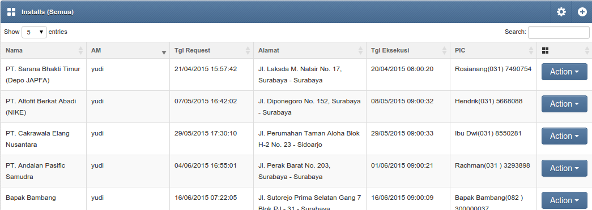

Dokumentasi padiApp
PT PadiNET
- created: 07/29/2016
- latest update: 08/01/2016
- by: Puji W Prayitno
- email: puji@padi.net.id
PT PadiNET, Jl Mayjen Sungkono 83 Surabaya
Pendahuluan
Tulisan ini adalah dokumentasi dari padiApp.
Daftar Istilah:
AM : Account Manager, atau sales, yaitu pegawai PT PadiNET dari divisi Marketing yang menangani pelanggan tertentu. Menangani pelanggan dalam artian :
- mencari Calon Pelanggan,
- memasukkan data Calon Pelanggan ke dalam data Suspect
- menentukan Calon Pelanggan yang prospect
- mengajukan Survey
- mengajukan Instalasi
- menerima keluhan dari Pelanggan
- menerima pengajuan Perubahan Layanan
TS : Technical Support, yaitu team technical support yang menangani masalah teknis berkaitan dengan pelanggan. Tugas TS antara lain:
- menerima pengajuan Survey dari AM
- melakkan aktivitas Survey di lapangan
- menerima pengajuan Instalasi dari AM
- melaukan aktivitas Instalasi di lapangan
- menerima keluhan dari Pelanggan
- memutuskan perlunya Troubleshooting
- melakukan aktivitas Troubleshootig di lapangan
Calon Pelanggan : yaitu perseorangan atau perusahaan yang menjadi target untuk bergabung menjadi pelanggan
Pelanggan : yaitu perseorangan atau perusahaan yang telah bergabung menjadi pelanggan padiNET
PIC : yaitu petugas dari Pelanggan / Calon Pelanggan yang dihubungi berkenaan dengan Internet Pelanggan / Calon Pelanggan
Rich Text Editor: Editor text dengan format (bold,italic, underline, ordered list,unordered list, dll)
Suspect
Suspect adalah tahap awal dari entri database pelanggan. Aktifitas Suspect dilakukan oleh Account Manager (AM). AM mencatat data calon pelanggan ke dalam database.
Preview(Sales View):
Nama adalah nama Calon Pelanggan
AM adalah nama AM
Tipe Bisnis adalah tipe bisnis dari Calon Pelanggan
Alamat adalah alamat dari Calon Pelanggan
PIC adalah Person in Charge dari Calon Pelanggan, yaitu orang yang dihubungi berkenaan dengan permasalahan Pelanggan.
Tgl Entri adalah tanggal dimana AM mengisi data calon pelanggan ini
Aksi adalah menu dari data Suspect. Edit digunakan untuk mengedit data Calon Pelanggan. Hapus digunakan untuk menghapus data Calon Pelanggan.
Prospect
Prospect adalah tahap kedua setelah Suspect, dimana dipilih calon pelangan yang akan bergabung (join) menjadi pelanggan PadiNET. Proses yang dilakukan oleh AM setelah Suspect adalah Prospect. Pada proses ini ditentukan apakah Calon Pelanggan akan bergabung (menjadi pelanggan) ataukah tidak.
preview(Sales View):
Survey
Diagram Use Case

Tahap Survey didahului dengan pengajuan Survey oleh AM.
Proses Survey diajukan oleh AM dari Calon Pelanggan yang telah masuk proses Prospect. Pengajuan Survey ditindaklanjuti oleh TS yang akan melakukan survey ke lokasi Calon Pelanggan untuk menentukan apakah dapat dilakukan Instalasi ataukah tidak. Selanjutnya TS mengisikan data hasil Survey ke aplikasi.
Sales View
Preview
Keterangan:
- Nama: adalah nama Calon Pelanggan yang hendak disurvey
- AM: nama AM
- Tgl Request: Tanggal saat AM melakukan request
- Alamat: Alamat Calon Pelanggan yang hendak disurvey
- Tgl Eksekusi: Tanggal Survey
- Petugas: Petugas Survey
- Peruntukan: Pelanggan baru atau Perubahan Layanan
- Hasil Survey: Belum ada kesimpulan, Dapat dilaksanakan, Dapat dilaksanakan dengan syarat, Tidak dapat dilaksanakan
- Aksi: Edit dan Report
Pengajuan Survey
untuk mengajukan survey, calon pelanggan dipilih dari data Prospect. Tekan tombol Aksi, pilih menu Ajukan Survey dari Drop Down.
Pilihan Area TS, untuk menentukan TS yang menangani Pelanggan yang bersangkutan
Hal ini penting untuk mengirimkan notifikasi kepada TS yang sesuai bagi Pelanggan tertentu.
Data Pelanggan, meliputi :
- Nama Pelanggan
- PIC Pusat
- Alamat
- Layanan
Data Cabang Pelanggan, meliputi:
- Cabang PadiNET yang menangani
- Alamat Cabang
- Kota
- PIC Cabang
- Telepon
- Jabatan PIC
- Email PIC
Keterangan Survey, meliputi:
- Tanggal Survey, yakni tanggal kapan Survey harus dilakukan oleh TS
- Keterangan
TS View
Preview
Yang dapat dilakukan oleh TS adalah melihat data pengajuan Survey dan mengisikan laporan hasil survey.
Mengisikan laporan hasil Survey
Dari table Survey, pada baris perusahaan yang hendak diisi laporannya klik tombol Aksi, kemudian pilih menu Report.
halaman edit Survey (TS)
Pada bagian atas peruntukan adalah status Survey, yaitu bisa dilaksanakan, tidak bisa dilaksanakan atau bisa dilaksanakan dengan syarat. Status ini tergantung pilihan TS saat menyimpan (tombol paling kanan sejajar dengan status).
Peruntukan berisi pilihan Pelanggan Baru, Site Baru, dan Relokasi
PIC Pelanggan
Kebutuhan Material

Dialog
Tim TS yang melakukan Survey
Gambar Survey
Keterangan Pelanggan
Detail Lokasi
Jarak Antar Site
Kebutuhan Peralatan
dipergunakan untuk mengisikan peralatan yang diperlukan pada saat instalasi
dialog kebutuhan peralatan:
- Jenis: Jenis peralatan
- Nama: Nama peralatan, tergantung pada pilihan Jenis di atasnya
- Jumlah: jumlah peralatan
- Keterangan: Keterangan peralatan, Rich Text Editor
Jarak dengan BTS Sekitar
Resume
Resume berisikan hasil dari aktivitas Survey. Merupakan Rich Text Editor.
Install
Pada tahap Instal, AM mengajukan Instal
Sales View
Preview

- Nama: adalah nama Pelanggan
- AM: adalah nama AM
- Tgl Request: Tanggal saat AM mengajukan Instalasi
- Alamat: Alamat Instalasi Pelanggan
- Tgl Eksekusi: Tanggal Instalasi
- PIC: PIC Pelanggan
- Action: Edit dan Report
Apabila hasil Survey dapat dilaksanakan, maka AM dapat mengajukan Instalasi ke TS. TS menindaklanjuti pengajuan ini ke lapangan dan mengisikan data hasil instalasi setelah pekerjaan instalasi selesai.
Ticket
TS menerima keluhan dari pelanggan. Keluhan tersebut dicatat dalam database Ticket. Dalam database ticket dicatat antara lain pelapor, keluhan, nama perusahaan,solusi, serta lama penanganan.
Ticket dapat dibedakan berdasarkan warna sbb:
- text merah adalah ticket yang memiliki troubleshoot
- backgroundhijau adalah ticket yang masih open
- background coklat adalah ticket gangguan massal
preview:
Troubleshoot
Ticket yang terbuka dan membutuhkan pelanganan di lapangan memerlukan proses Troubleshoot. Troubleshoot diajukan oleh TS sendiri dan difollowup oleh TS. Setelah Troubleshoot selesai maka TS mengisikan hasil Troubleshoot ke aplikasi.
Trial
Trial diajukan oleh AM untuk mencoba layanan tertentu pada jangka waktu tertentu.
Perubahan Layanan
Perubahan Layanan meliputi Downgrade dan Upgrade